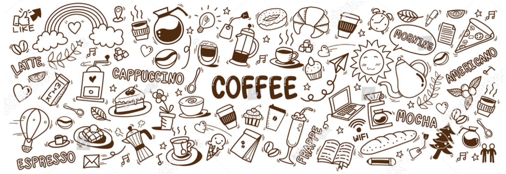

Kaffets historia
Kaffet härstammar från Etiopiens bergstrakter. En gång i tidernas begynnelse vallade en herde vid namn Kaldi sina getter och såg att de uppförde sig underligt efter att ha ätit röda bär från en buske. De skuttade och hoppade omkring, pigga och glada. Herden blev givetvis nyfiken på bären och smakade då upptäckte han att även han blev väldigt pigg.
I början lade man den råa kaffebönan i vatten och drack som en dryck eller så krossade man bönorna och blandade dem med djurfett och hade det med att äta på långa vandringar. Nyheten om energibären spred sig snabbt, och man började odla kaffe på den arabiska halvön. Därifrån spreds kaffet till Turkiet som rostade kaffet för första gången, man hade helt enkelt slängt ett par bönor i elden och en ljuvlig arom spreds sig. Det var efter detta man började att rosta bönorna, krossa dem och koka upp dem med vatten, en primitiv version av den dryck vi dricker idag.
På 1600-talet kom den första stora lasten till Europa och kaffe är idag en av världens viktigaste handelsvaror. Kaffet betraktades från början som en medicinsk och religiös dryck. Venedig som handlade mycket med Orienten öppnade det första europeiska kaffehuset. Därifrån spred sig kaffehusen, dagens caféer runt om i Europa.
På 1600-talet kom den första stora lasten till Europa och kaffe är idag en av världens viktigaste handelsvaror. Kaffet betraktades från början som en medicinsk och religiös dryck. Venedig som handlade mycket med Orienten öppnade det första europeiska kaffehuset. Därifrån spred sig kaffehusen, dagens caféer runt om i Europa.
År 1685 kom kaffet till Sverige. Det första kaffet anlände till Göteborg, någon tog in ett halvt kilo kaffe! Från 1687 kunde man köpa det som medicin på Apoteken. Kaffet var mycket dyrt och dracks till början bara av förmöget folk och framför allt av män!
Kaffet blev snabbt en stor handelsvara i Sverige vilket störde den övriga handeln så under fem tillfällen har det varit kaffeförbud i Sverige. De första kom 1756 och det sista var under 1817-22. Det var under det sista kaffeförbudet som vårat ”kaffegille” uppstod. Folket gick helt enkelt ut i skogen i hemlighet för att dricka sitt kaffe!
Upptäckten av kaffe
Av andra halvan av 1400-talet, spreds sig kaffet till Saudiarabien via Mecca och Medina och fortsatte vidare för att nå Kairo år 1510. Första halvan av 1500-talet, nådde Osmanic Kingdom sin zenit. Kaffe kom att spela en ökande viktig roll i Arabien, Mindre Asien, Syrien, Egypten och i södra öst Europa. De första kaffehusen öppnades i Damaskus och Aleppo år 1530 och 1532.
